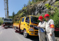
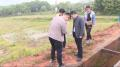

党建培训
用心用情用力保护好管理好运用好红色资源
新时代新征程上，我们要用心用情用力保护好、管理好、运用好红色资源，传承好红色基因，努力创造不负革命先辈期望、无愧于历史和人民的新业绩。党史教育夯实基础 助推“党建+”高质量发展
积极实践“三抓三促”活动，强化“党建+养护”理念，通过 “鄱湖行”党建品牌创建，党员干部在养护施工、疫情防控、清障施救等急、难、险、重任务中勇挑重担、冲锋在前，实现了九景、彭湖高速公路全路域党建
夔门电力开展“党建+安全生产”见成效
近年来，重庆夔门电力设备安装有限公司认真落实国网重庆市电力公司大力实施“党建+”工程，推动党建与业务工作深度融合的工作要求，积极申请立项“党建+安全生产”工程，制定工程项目实施方案，建立并落实项目实施、评价、完善、推广机制，扎实推进“党建+安全生产”工程，取得明显成效。党史培训
天津大学党史学习教育：深挖红色资源立德树人
这仅是天津大学用“金课”开展党史学习教育的一个缩影。学校积极发挥课堂主渠道作用，打造引人入胜的革命历史课、思政精品课、主题实践课，引导师生学党史、知党情、感党恩、跟党走。开设“中国共产党史”“马克思主义发展史”等10门思政“金课”，实现“四史”学习全覆盖。
从云端到田间 处处是红色课堂
井冈山、瑞金、南昌、安源……丰富的红色资源，成为江西高校大学生开展党史学习教育的宝贵资源。如何开启对话历史的窗口，找到百年间两代年轻人交流的通道？江西高校紧密结合办学特色和时代使命，创新教育形式，丰富教育载体，推动“四史”教育走深走实。